MidTerm
MidTerm Review - Ergonomic, tool-free, press-fit table for digital nomads, built in MDF
Introduction and Objective
This page documents the creation of an ergonomic table that is easy to assemble without screws and easy to take apart. Together with the team, we took on this challenge to apply all the skills acquired during the first half of the semester.
1. Brainstorming and Table Sketches
As a first step, we looked for inspiration on how to create our own table, using Pinterest as a reference tool.

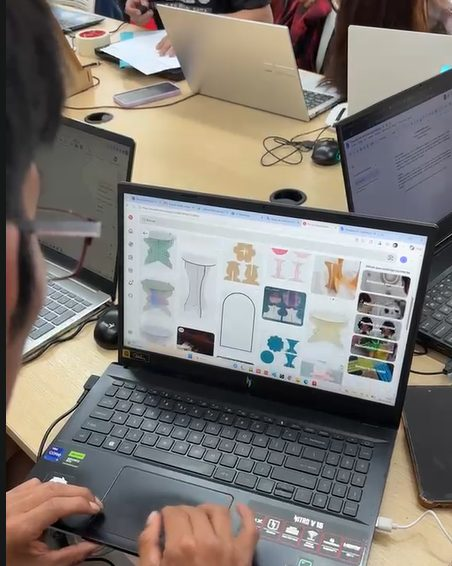
After that, we ran our own brainstorming session and drew several sketches, until we found one that fits the brief and meets the objectives we set.


The design was developed in parts, both freehand and with some technical drawing (or at least we tried to), so that our teammates could later build it with computer-aided design.
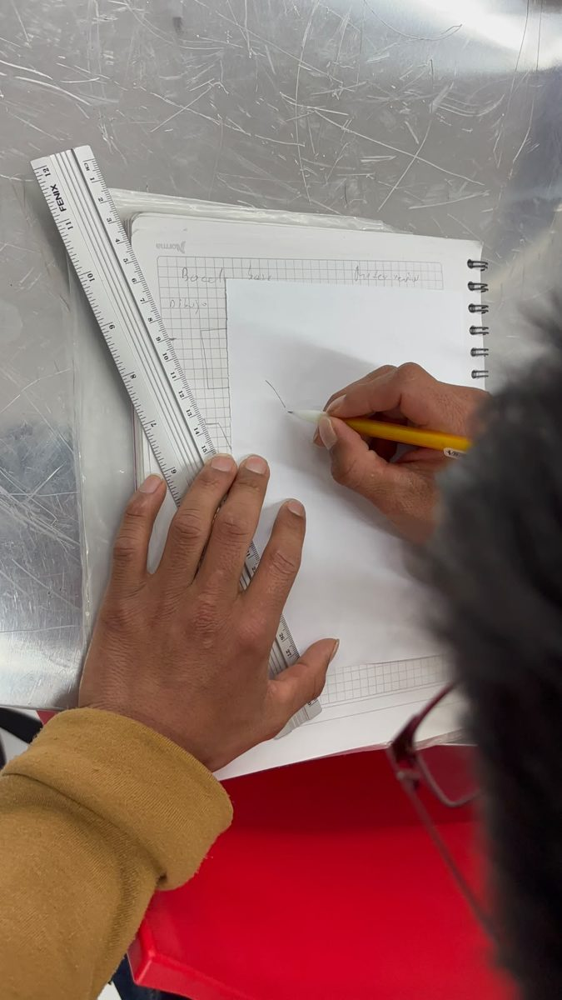
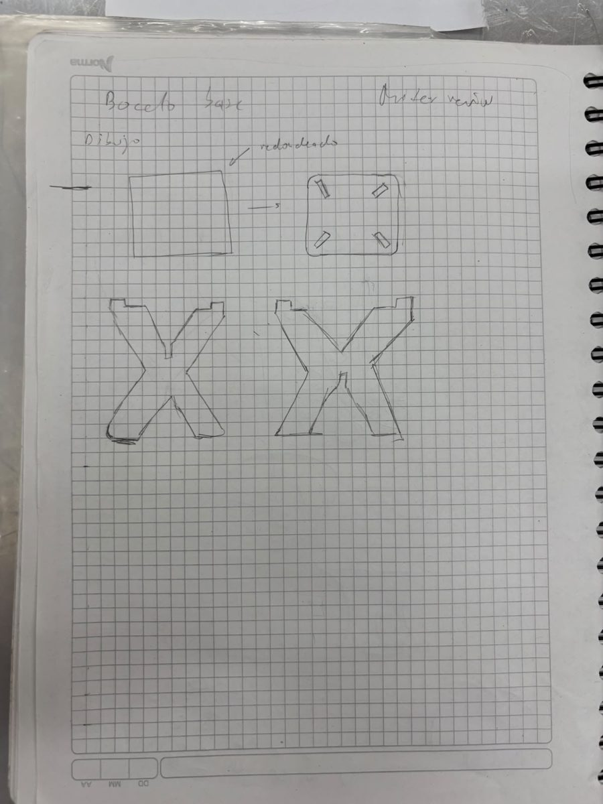

2. Ergonomic Table Design
After selecting the most viable proposal through brainstorming, preliminary sketches and reference research, we moved on to the digital design of the table using computer-aided modeling software (Fusion). The goal of this stage was to turn the concepts into a model with defined dimensions and structural features suitable for fabrication.
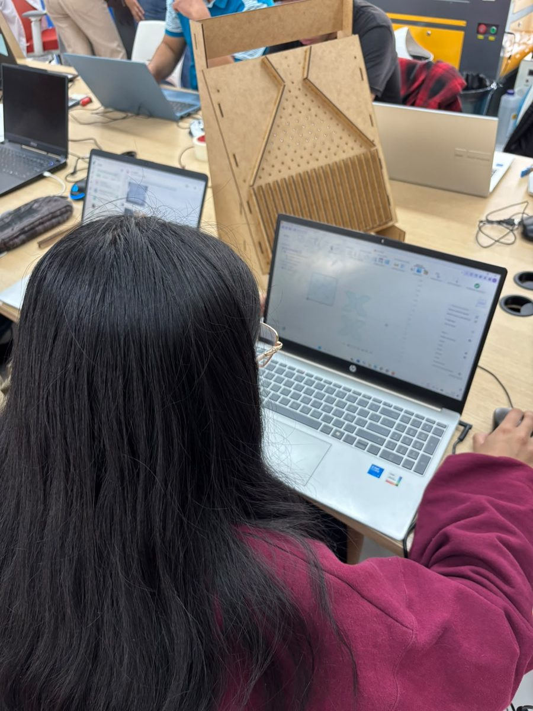
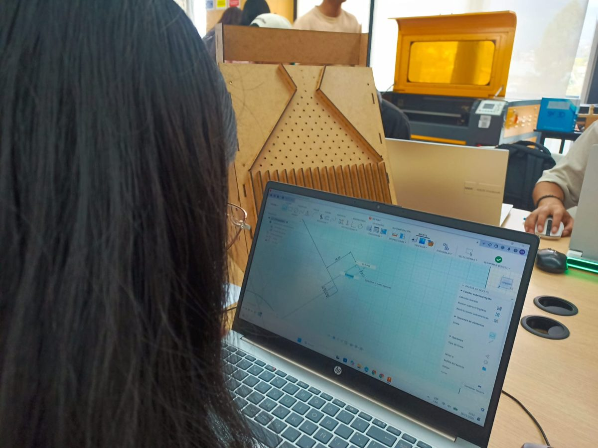
Finally, we obtained the table drawings: a preview of the design in Fusion and a drawing sheet showing each view.


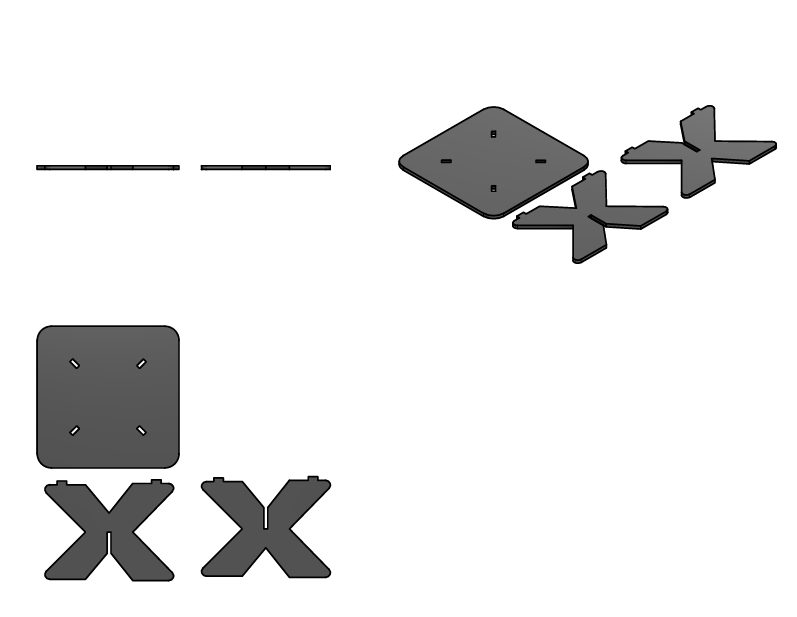
3. DXF Export and Laser Cutting
Once the digital design was finished and validated, the file generated in Fusion was exported and stored on a USB drive to be used on the laser cutter of the digital fabrication lab.
The design was then loaded into the cutting machine, where we set the parameters needed to fabricate the table pieces. As part of the validation process, a prototype was made in MDF to check the accuracy of the cuts and the fit of the joints designed in the digital model.

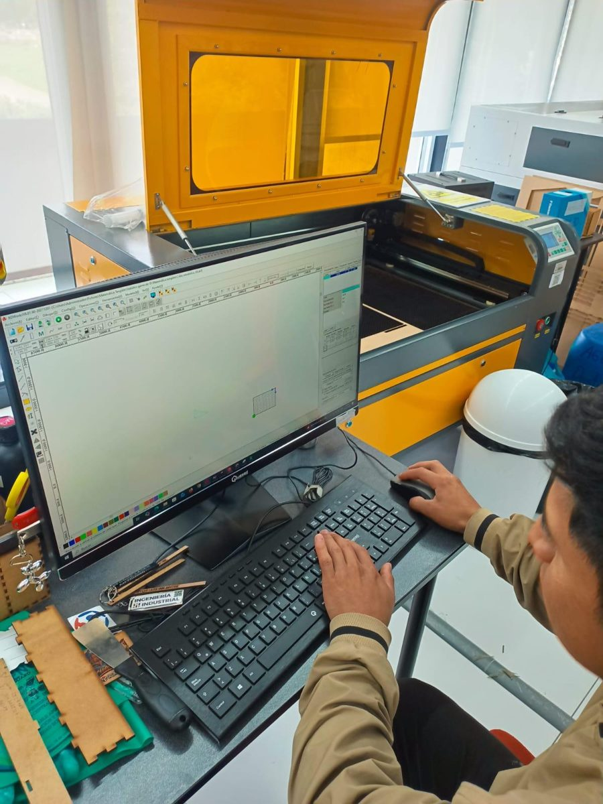
Before sending the cut, we first checked the kerf to avoid any problem at assembly time, so that the pieces fit snugly and not loose.
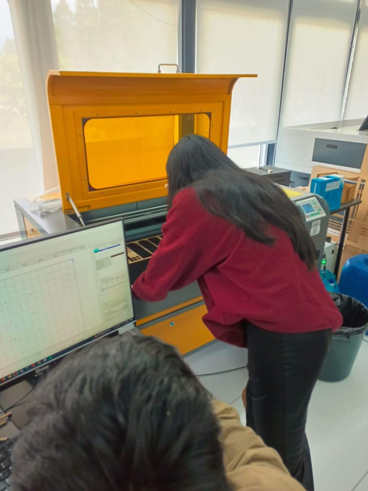

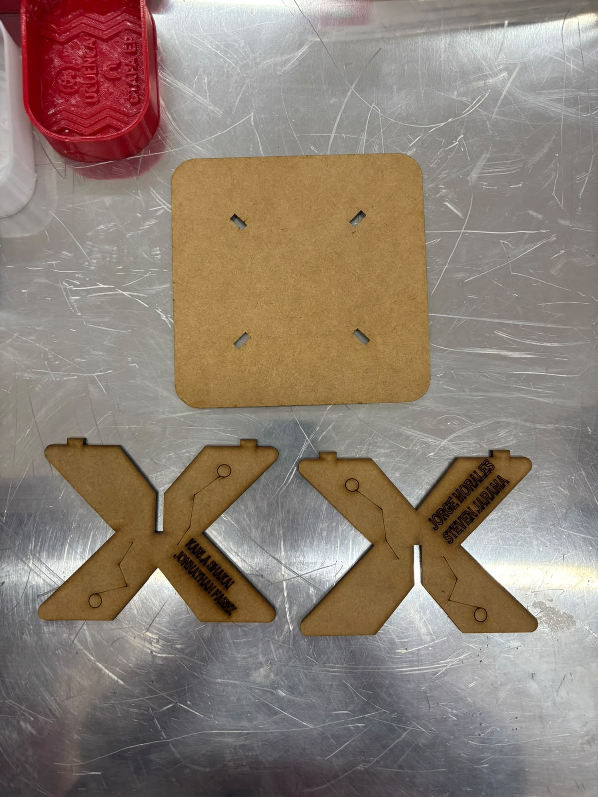
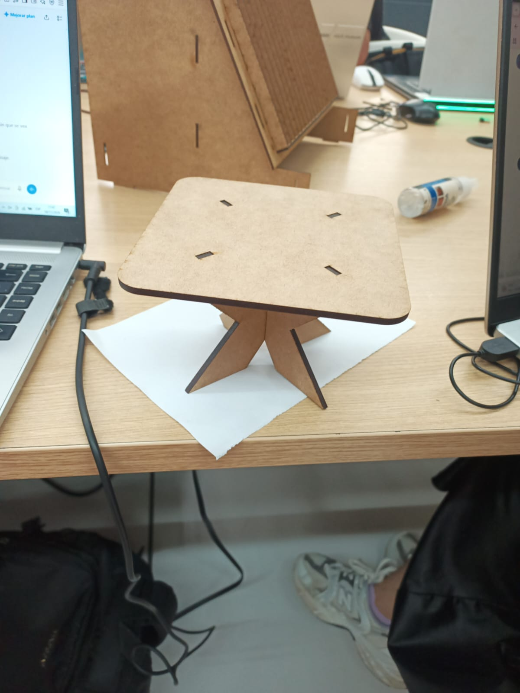
4. UV Printing on the Table Top
Before finishing the assembly, the top of the table was engraved with the FabLab logo, along with an interactive game for the students or young people who will sit at the table.
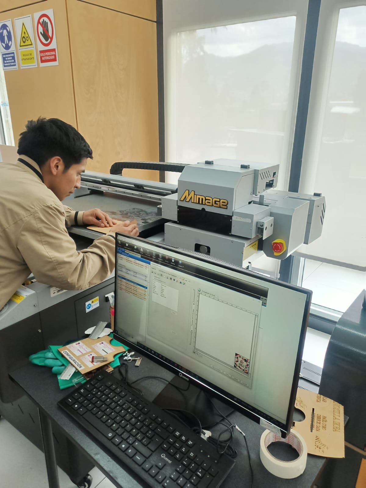
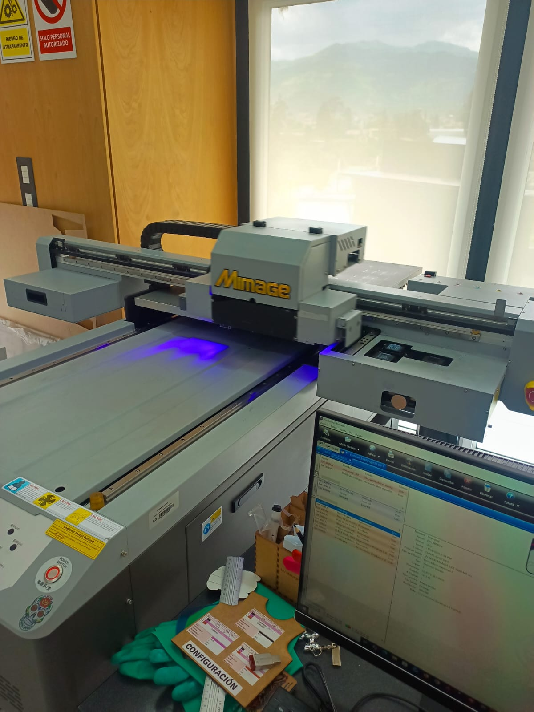
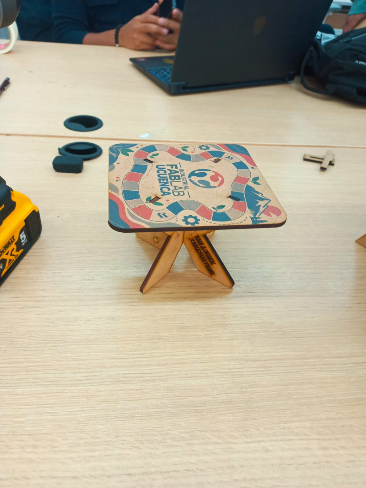
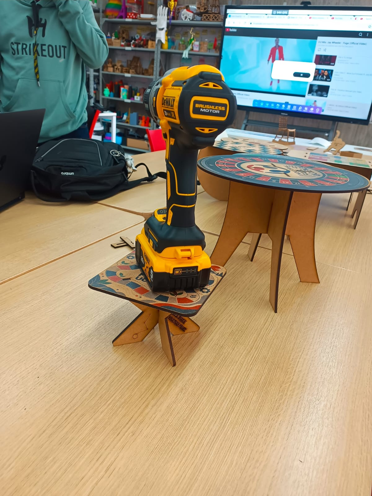
5. Table Assembly
Here we carried out the assembly of the table once all the other processes were completed. This section includes a preview of the assembly manual created after obtaining the table, with views of the pieces and of the final assembly.
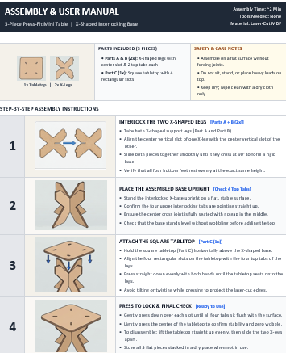
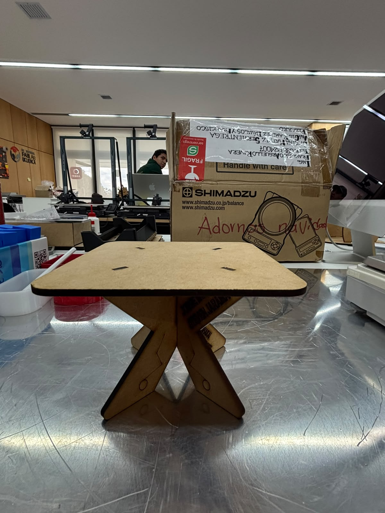
6. Video Editing
We made a video covering the whole process, from the beginning to the end of the creation of the ergonomic table, based on the requirements of the client or user.
7. Conclusions
The MidTerm challenge let us apply, in a single project, the skills from the first half of the semester: ideation and sketching, parametric 2D design in Fusion, DXF export, laser cutting in MDF and documentation. Going from Pinterest references and hand sketches to physical pieces showed us how much each stage depends on the previous one.
A table made of flat, press-fit pieces meets the brief: it needs no screws or tools, it is easy to take apart and its pieces can be stacked and transported, which suits digital nomads in Airbnb settings. Checking the kerf before cutting was key to getting tight joints, and the MDF prototype confirmed the fit before the final fabrication.
Adding the UV-printed FabLab logo and an interactive game, plus the assembly manual and the video, turned a prototype into a more complete product with a user in mind. As next steps, we would test the 1:1 scale and refine the dimensions for the comfort of 4 users.
Downloads
All the files of the MidTerm project, ready to download.
8. Bibliography
- Autodesk. (n.d.). Parameters in Fusion. Autodesk Help. help.autodesk.com
- Dongguan Thunder Laser Equipment Co., Ltd. (n.d.). Thunder Laser Software RDWorksV8.0 user’s manual [PDF]. cdn.thunderlaser.com
- Fab Academy Bahrain. (2024). Resources and links: Computer controlled cutting (What is kerf?). fabacademy.org/2024/labs/bahrain/Resources
- xTool. (n.d.). What is laser cutting kerf? xTool Academy. xtool.com/blogs/xtool-academy/laser-cutting-kerf
- Wikipedia contributors. (n.d.). Medium-density fibreboard. Wikipedia. en.wikipedia.org/wiki/Medium-density_fibreboard
- Pinterest. (n.d.). Press-fit and flat-pack table ideas [Reference search]. pinterest.com